Università degli Studi di Firenze
Laurea Magistrale in Ingegneria Informatica
Corso di Apprendimento Automatico
Multi-Column Deep Neural Networks for Image Classification
Contents
- Introduction
- Deep Learning
- Convolutional Neural Networks
- Convolutional Layer
- Max-pooling Layer
- Activation functions
- Rectified Linear Units (RELU)
- Dropout
- Maxout
- Softmax
- Implementation technologies
- Dataset
- Preprocessing: GCN, Toronto, ZCA
- Architecture
- Results
Multi-column DNN for image classification
- Detect the image content:
- e.g. cat, doog, airplain, birt, etc...
- Using deep learning algorithms:
- Convolutional Neural Network (CNN)
- Famous benchmarks:
- CIFAR-10 and CIFAR-100;
- MNIST: handwritten digits;
- Issues:
- Higher number of layer than shallow Neural Network (NN);
- Multiple Deep Neural Network (DNN);
- Vanishing gradient problem;
- Computational complexity.
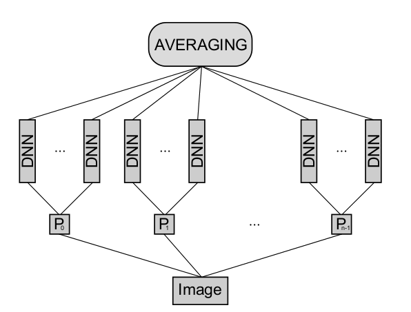
Solution proposed
It is based on Multi-column Deep Neural Networks for Image Classification
- D. Cireșan, U. Meier and J. Schmidhuber[1] of Dalle Molle Institute for Artificial Intelligence (IDSIA).
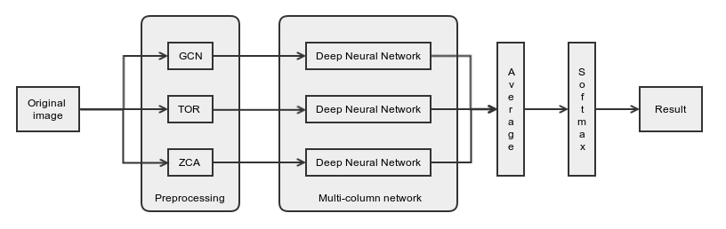
- Each DNN is iteratively trained over only one processed dataset;
- The feature vectors of all DNN are democratically averaged;
- Softmax layer returns the image's predicted class.
Deep learning
Introduction
- The visual nervous system proposed by Hubel and Wiesel has a deep hierarchy model[2]:
- Suggests that:
- Concepts are describe in hierarchical ways;
- Multiple levels architecture:
- multiple stages of transformation and representation;
- with increasing level of abstraction;
- Distributed representation:
- Each level of abstraction forms a large number of features not mutually exclusive;
- First extract low-level features i.e. low level concepts
- Detect the most frequent patterns i.e. increase abstraction;
- Putting all together to identify categories;
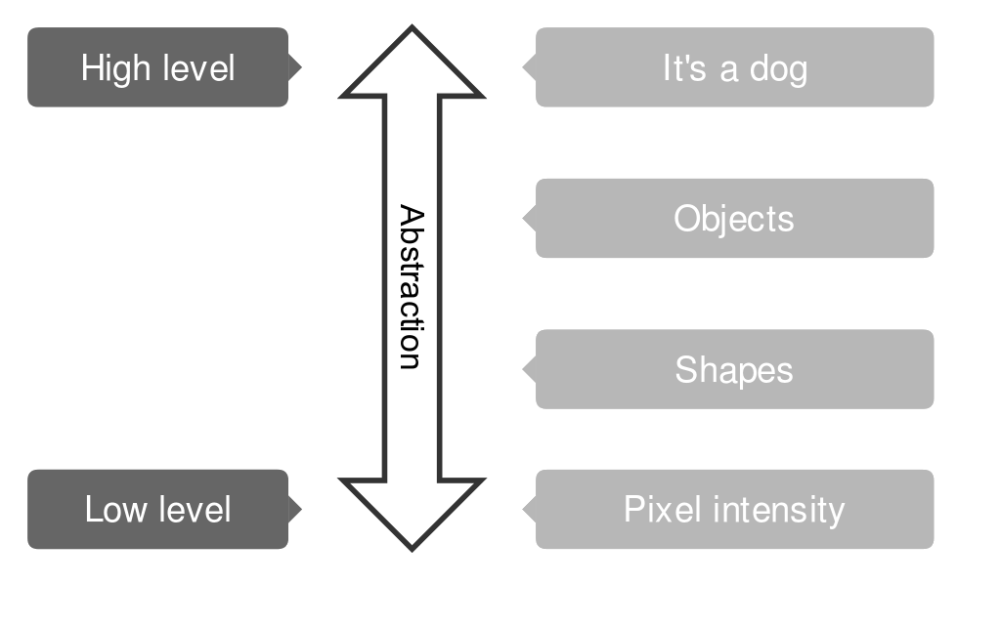
Deep learning
Milestone
- 1980: Kunihiko Fukushima introduces the Neocognitron[3];
- 1989: Yann LeCun et al. apply backpropagation algorithm to DNN:
- too much time to train the network;
- 1991: J. Schmidhuber vanishing gradient problem;
- 2000: G. Hinton pre-trained one layer at a time with unsupervised algorithm, then using supervised backpropagation;
- 2010: D. Cireșan by using GPUs, trains a DNN with supervised algorithm even though the vanishing gradient problem;
- 2011: DNN becomes the state-of-art systems in computer vision;
- 2012: D. Ciresan at al. train a Multi-Column DNN and on traffic sign recognition benchmark it out-performs humans.
Deep learning
Sparse representation: advantages
- Information disentangling:
- a dense representation is highly entangled, any change in the input modifies most of the entries in the representation vector;
- a sparse representation is robust to small input changes.
- Efficient variable-size representation:
- different inputs may contain different amounts of information;
- varying the number of active neurons allows a model to control the effective dimensionality of the representation for a given input and the required precision;
- Linear separability:
- sparse representations are also more likely to be linearly separable.
- Distributed but sparse:
- dense distributed representations are the richest representations, being potentially exponentially more efficient than purely local ones (Bengio, 2009);
- sparse representations’ efficiency is still exponentially greater, with the power of the exponent being the number of non-zero features. They may represent a good trade-off with respect to the above criteria.
Convolutional Neural Networks (CNN)
Introduction
- CNNs are an implementation of deep learning architecture:
- are variations of Multi-Layer Perceptrons (MLP);
- each layer has a topological structure, i.e. each unit as a 2D position that corresponds to an image's pixel;
- CNN's design:
- Convolutional layer: implements the convolution operation as in image processing;
- Max-pooling layer: implements a form of non-linear down-sampling;
- Fully connected layer: the upper-layer and corresponds to a traditional MLP.
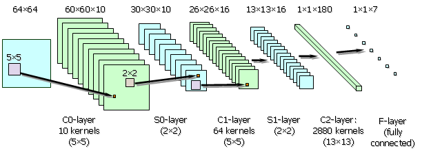
Figure: Convolutional Neural Network: 1x48x48-10C2-MP2-16C5-MP2-16C13-180N-7N.
Convolutional Neural Networks (CNN)
Convolutional layer
- Implements the convolution operation:
- A linear filter $W \in \mathbb{R}^{m \times m}$ and bias $b$ is applied to the input image or to a feature map $X \in \mathbb{R}^{N \times N}$. Mathematically:
- Sparse connectivity i.e. only a subset of units in a feature map are used;
- After a non-linear function $\sigma$ is applied.
- The ouput image $Y = \sigma(C)$ is called feature map;
- by appling $k$ different filters we obtain $k$ feature maps: $\{Y^{s}\}_{s=1}^{k}$.
- $Y \in \mathbb{R}^{(N-m+1) \times (N-m+1)}$
- We use $k\text{C}m$ to indicate a C-Layer that applies $k$ filters of $m\times m$ dimension to a feature map ;
$c_{ij}=\sum\limits_{k=0}^{m-1}\sum\limits_{l=0}^{m-1}x_{(i+k)(j+l)}w_{kl} + b$
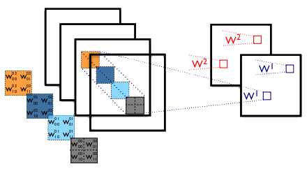
Figure: C-Layer operation.
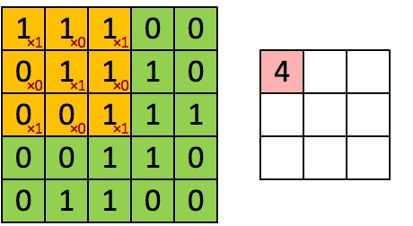
Figure: convolution operation.
Convolutional Neural Networks (CNN)
Convolutional layer: shared weights
- The linear filter $W$ is applied across the entire input feature map;
- The units share the same weights $w_{ij}$
- Advantage of weight sharing:
- The features can be detected regardless of their position;
- Increased of learning efficiency by reducing the number of free parameters;
- CNNs achieve better generalization.
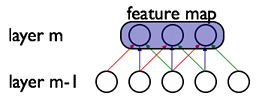
Figure: the weights with the same color are shared.
Convolutional Neural Networks (CNN)
Max-pooling layer
- M-Layer implements a form of non-linear down-sampling;
- How M-Layer works:
- The M-Layer receives as input a set of feature maps $I=\{I_j\}$ which is the output of C-Layer that precedes it;
- Each feature map $I_j$ is partitioned into a set of non-overlapping rectangles $R_{i}^{(j)} \in \mathbb{R}^{k \times k}$;
- For each rectangle $R_{i}^{(j)}$ the maximum value are taken which form the output feature map $O_j$;
- The output of M-Layer is a set of feature maps $O=\{O_j\}$;
- If the input feature maps $I_j \in \mathbb{R}^{N \times N}$ then the output feature maps $O_j \in \mathbb{R}^{\frac{N}{k} \times \frac{N}{k}} \;$ :
- as each $k \times k$ sub-region is reduced to just a single value via the max function.
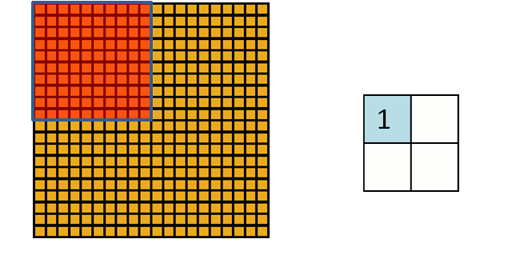
Figure: Max-pooling operation.
Convolutional Neural Networks (CNN)
Max-pooling layer: advantage
- Advantage of M-Layer:
- reduces the computational complexity for the layers above;
- provides a form of translation invariance:
- If we consider the neighbors of a feature map's unit the 8-connected units;
- and max-pooling is done over a $2 \times 2$ region, $3$ out of these $8$ possible configurations will produce exactly the same output at the C-layer above;
Rectified Linear Units (ReLU)
ReLU function
- Rectified Linear units are a drop in replacement for the traditional nonlinear activation functions:
$ y = max (0 , b + \sum\limits_{i=1}^k x_i w_i) $
- ReLU units are more biologically plausible then the other activation functions;
- since they model the biological neuron's responses in their area of operation.
- While $sigmoid$ and $tanh$ activation functions are biologically implausible.
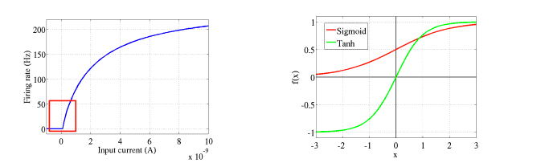
Figure: left: Firing of a neuron from biological data. Right: traditional activation functions.
Rectified Linear Units (ReLU)
ReLU derivative
- ReLU derivative:
- is not fully differentiable (not at $0$)
- can only take two values, $0$ or $1$.
- Compared to the logistic sigmoid neuron:
- it is much more efficient to compute (both its value and its partial derivatives)
- considerably speeds up training.
- enables much larger network implementations.
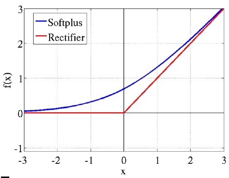
Figure: ReLu vs Softplus activation function.
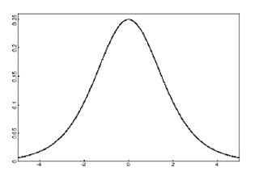
Figure: Sigmoid function derivative.
Rectified Linear Units (ReLU)
Potential problem
- Potential problem by using ReLU activation function:
- hard saturation at $0$ may hurt optimization by blocking gradient back-propagation.
To evaluate the potential impact of this effect we also investigate the soft-plus activation:
$softplus(x) = log(1+ e^x)$which is a smooth version of the rectifying non-linearity.
- We lose the exact sparsity, but may hope to gain easier training. However, experimental results tend to contradict that hypothesis, suggesting that hard zeros can actually help supervised training.
Rectified Linear Units (ReLU)
Advantages
- The Advantages to use ReLU activation function are:
- Biological plausibility: one-sided, compared to the antisymmetry of tanh;
- Sparse activation: e.g. in a randomly initialized networks, only about 50% of hidden units is activated (having a non-zero output);
- Efficient gradient propagation: no vanishing gradient problem or exploding effect;
- Efficient computation: only comparison, addition and multiplication.
Dropout
How to improve a neural network
- Train many models and average the models' predictions:
- reduce test error and overfitting;
- too expensive for big NN and that already take several days to train.
- Dropout is a more efficient solution[4]. It provides:
- an inexpensive and simple means of both training a large ensemble of models;
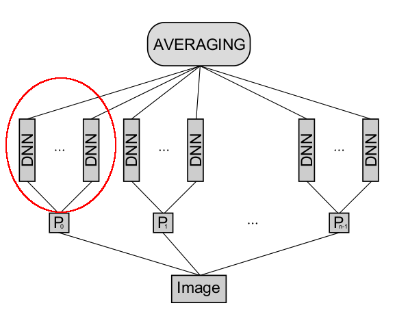
Dropout
How Dropout works
- Given a feedforward architecture:
- Input: $v \, \in \mathbb{R}^{m}$;
- Hidden layers: $ \, h = \{h^{(1)}, \dots, h^{(l)} \}$;
- Output: $\, y \in \mathbb{R}^{n}$;
- Dropout trains a set of models, each of which:
- contains a subset of the variables in both $v$ and $h$;
- each model uses the same set of parameters $\theta$:
- to parameterize a family of distributions $p(y | v; \theta, \mu)$;
- where $\mu \in M$ is a binary mask determining which variables to include in the model.
- On each presentation of a training example:
- a different sub-model is obtained by randomly sampling $\mu$;
- the sub-model is trained by following the gradient of $log \, p(y | v; \theta, \mu)$;
- Each model is trained for only one step and all the models share the parameters $\theta$.
Note: each update must have a large effect so that it makes the sub-model induced by that $\mu$ fit the current input $v$ well.
Dropout
Model prediction
- Model prediction is obtained by averaging together all the sub-models prediction.
- By using Dropout the number of models trained is exponential:
- when $p(y | v;\theta) = softmax(v^{T}W+b)$
- the predictive distribution defined by renormalizing the geometric mean of $p(y | v;\theta, \mu)$ over $M$ is simply given by:
$softmax(v^{T}\frac{W}{2}+b)$
Maxout
Introduction
- Maxout (J. Goodfellow et al. 2013) is so named because its output is the max of a set of inputs:
- it is a natural companion to dropout;
- Maxout model introduce a new type of activation function called maxout unit[6]:
- Given an input $x \in \mathbb{R^d}$, the maxout layer implements the function:
$h_{i}(x) = \max\limits_{j \in [1, k]}^{} z_{i}^{(j)}$
where:
$z_{i}^{(j)} = x^{T}W_{i}^{(j)} + b_{i}^{(j)}$
and:
$W \in \mathbb{R}^{d \times m \times k} \text{and } b \in \mathbb{R}^{m \times k}$
- $m$: number of hidden units;
- $d$: size of input vector;
- $k$: number of linear models.
Maxout
Universal approximator
- Theorem (universal approximator): any continuous function $f$ can be approximated arbitrarily well on a compact domain $C ⊂ \mathbb{R}^{n}$ by a maxout network with two maxout hidden units.
- (Wang, 2004) any continuous function can be expressed as a difference of $2$ convex functions:
- (Stone-Weierstrass) any continuous function can be approximated by a piecewise linear function
Proof:
$g(x)=h_{1}(x)-h_{2}(x)$
$|f(x)-g(x)|< \epsilon$
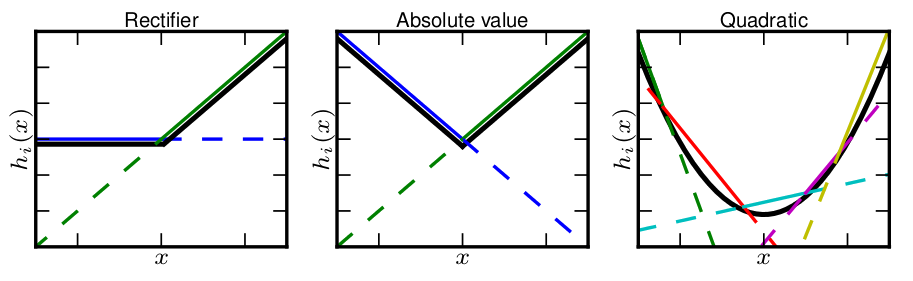
Figure: examples of approximation with maxout.
Maxout
Activation function
- Maxout learn the activation function:
- with $k=2$ (number of maxout unit) the activation function can be:
- ReLU function;
- Absolute function;
- with $k=5$ the activation function can be a quadratic function.

Figure: example of maxout net with $2$ hidden units.
Softmax
Softmax layer
- Softmax regression is a generalization of logistic regression:
- where we want to handle multiple classes;
- In logistic regression the labels are binary: $y^{(i)} \in \{0,1\}$ ;
- Softmax regression allows us to handle: $y^{(i)} \in \{1,\ldots,K\}$ :
- where $K$ is the number of classes;
- Given a training set: $\{ (x^{(1)}, y^{(1)}), \ldots, (x^{(m)}, y^{(m)}) \}$ of $m$ labeled examples, where the input features are $x^{(i)} \in \mathbb{R}^n$.
- with logistic regression the hypotesis took the form:
$h_\theta(x) = \frac{1}{1+\exp(-\theta^\top x)}$
- where $\theta^\top$ are the parameters to optimize and $ 0 \leq h_\theta(x) \leq 1$.
- i.e. $h_\theta(x) = P(y=1|x;\theta)$
Softmax
Softmax layer
- Given a test input $x$, we want our hypothesis to estimate the probability that $P(y=k | x)$ for each value of $k = 1 \ldots, K$:
- i.e., we want to estimate the probability of the class label taking on each of the $K$ different possible values.
- Thus, our hypothesis will output a $K$-dimensional vector (whose elements sum to 1) giving us our $K$ estimated probabilities:
- Concretely, our hypothesis $h_{\theta}(x)$ takes the form:
$
\begin{align}
h_\theta(x) =
\begin{bmatrix}
P(y = 1 | x; \theta) \\
P(y = 2 | x; \theta) \\
\vdots \\
P(y = K | x; \theta)
\end{bmatrix}
=
\frac{1}{ \sum_{j=1}^{K}{\exp(\theta^{(j)\top} x) }}
\begin{bmatrix}
\exp(\theta^{(1)\top} x ) \\
\exp(\theta^{(2)\top} x ) \\
\vdots \\
\exp(\theta^{(K)\top} x ) \\
\end{bmatrix}
\end{align}
$
- where $\theta^{(1)}, \theta^{(2)}, \ldots, \theta^{(K)} \in \mathbb{R}^{n}$ are the parameters of our model:
- Notice that the term $\frac{1}{ \sum_{j=1}^{K}{\exp(\theta^{(j)\top} x) } } $ normalizes the distribution, so that it sums to one.
Cost Function
Softmax cost
- The cost function used in softmax regression is the follow:
$ J(\theta) = - \left[ \sum_{i=1}^{m} \sum_{k=1}^{K} 1\left\{y^{(i)} = k\right\} \log \frac{\exp(\theta^{(k)\top} x^{(i)})}{\sum_{j=1}^K \exp(\theta^{(j)\top} x^{(i)})}\right] $
- that is a generalization of logistic regression cost function:
$J(\theta) = - \left[ \sum_{i=1}^m (1-y^{(i)}) \log (1-h_\theta(x^{(i)})) + y^{(i)} \log h_\theta(x^{(i)}) \right]
= - \left[ \sum_{i=1}^{m} \sum_{k=0}^{1} 1\left\{y^{(i)} = k\right\} \log P(y^{(i)} = k | x^{(i)} ; \theta) \right]$
- where we sum over the $K$ different possible values of the class label.
- To obtain the parameters $\theta$ we'll resort to an iterative optimization algorithm using the gradient:
$ \nabla_{\theta^{(k)}} J(\theta) = - \sum_{i=1}^{m}{ \left[ x^{(i)} \left( 1\{ y^{(i)} = k\} - P(y^{(i)} = k | x^{(i)}; \theta) \right) \right] } $
Optimization method
Gradient Descent methods
- The Gradient Descent (GD) method is used to optimize the cost function:
- called Batch GD which use the full training set to compute the next update to parameters at each iteration;
- in practice computing the cost and gradient for the entire training set can be:
- very slow;
- sometimes intractable on a single machine if the dataset is too big to fit in main memory.
- Stochastic Gradient Descent (SGD) addresses both of these issues by following the negative gradient of the objective
after seeing:
- only a single or a few training examples: online setting;
- a small batch of examples e.g. $128$, $256$: Minibatch SGD.
Optimization method
Minibatch Stochastic Gradient Descent
- The standard gradient descent algorithm updates the parameters $\theta$ of the objective $J(\theta)$ as:
$\theta = \theta - \alpha \nabla_\theta E[J(\theta)]$
- where the expectation in the above equation is approximated by evaluating the cost and gradient over the full training set.
- Minibatch SGD update and computes the gradient of the parameters using a small batch of examples;
- the new update is given by:
$\theta = \theta - \alpha \nabla_\theta J(\theta; x^{b},y^{b})$
- where $\{x^{b}, y^{b}\}$ is the $b$-th subset of training set and $\alpha$ is the learning rate.
Optimization method
Momentum
- The objective has the form of a long shallow ravine leading to the optimum and steep walls on the sides, standard SGD will tend to oscillate across the narrow ravine since the negative gradient will point down one of the steep sides rather than along the ravine towards the optimum;
- Momentum is one method for pushing the objective more quickly along the shallow ravine[7];
- The momentum update is given by:
$\theta^{k+1} = \theta^{k} - \Delta \theta^{k+1}$
$\Delta \theta^{k+1} = \gamma \Delta \theta^{k} + \alpha \nabla_{\theta} J(\theta; x^{(i)},y^{(i)})$
- where $\gamma$ is the momentum and $\alpha$ the learning rate.
Implementation technologies
Tools
- Dataset: CIFAR-10
- Python:
- Pylearn2
- Theano
- Nvidia CUDA
- Pycharm
- PC Desktop:
- CPU: Intel Core i5-3570k
- RAM: 8 GB DDR3
- GPU: NVIDIA GeForce GTX 670
- CUDA core: 1344
- RAM: 2048 MB (256-bit GDDR5)
Multi-Column Convolutional Neural Network
Architecture
- We will go through the implementation details:
Figure: Multi-Column Deep Neural Network architecture.
- The single DNNs are trained separately.

Figure: single DNN training.
Dataset
Cifar-10
- The CIFAR-10 dataset is a famous benchmark:
- consists of $60000$ $32\times 32$ colour images in $10$ classes, with $6000$ images per class;
- there are $50000$ training images and $10000$ test images:
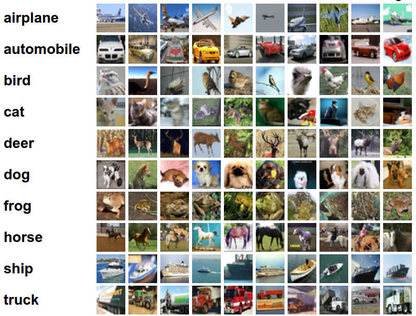
Cifar-10 dataset.
Dataset
Preprocessing
- Operations that give as a result a modified image with the same dimensions as the original image (e.g., contrast enhancement and noise reduction).
- In order to enhance the performance of the MCDNN, the dataset is preprocessed in $3$ different ways:
- Global Contrast Normalization (GCN);
- Toronto preprocessing;
- ZCA Whitening.
- Each preprocessed dataset is given as input to a single DNN;
Dataset
GCN and Toronto preprocessing
- In image processing, normalization is a process that changes the range of pixel intensity values.
- Global Contrast Normalization:
- each training sample is normalized by subtracting the per-example mean across pixels;
- and then normalizes by either the vector norm or the standard deviation;
- Toronto preprocessing:
- each training sample is normalized by subtracting the per-pixel mean across examples;
- and then normalizes by the maximum intensity value i.e. $255$;
- if the test is used the mean must be computed across the training set.
Dataset
Zero Components Analysis (ZCA)
- Whitening is an important pre-processing step for many algorithms.
- The images contain redundant data:
- the values of adjacent pixels in an image are highly correlated.
- The goal of whitening is to make the input less redundant:
- (i) the features are less correlated with each other;
- (ii) the features all have the same variance.
Dataset
Zero Components Analysis (ZCA): method
- The images $32 \times 32$ are flattened in $n=1024$ dimensional vectors;
- the dataset can be stored in a matrix $X \in \mathbb{R}^{d\times n}$;
- GCN is applied in order to have mean zero.
- To achive (i), we search a linear transformation $W$ such that:
$Y = WX$
- where $W$ is the decorrelating matrix, then $YY^{\top}$ must be diagonal i.e. uncorrelated. Therefore $W$ shall be such that
$YY^{\top} = (n-1)I$
-
i.e. $W$ make the covariance matrix of the transformed data matrix equal to the identity (ii).
- Let $W$ a symmetric matrix i.e. $W = W^{\top}$:
$W = \sqrt{n-1}(XX^T)^{-\frac{1}{2}} $
- Since $XX^{\top}$ is symmetric it's hence orthogonally diagonalizable, we can write:
$(XX^T)^{-\frac{1}{2}} = PD^{-\frac{1}{2}}P^T $
- where $P$ is a orthogonal matrix and $D$ is a diagonal matrix.
- $W$ is called a whitening matrix, and is referred to as the Zero Components Analysis (ZCA) solution to the equation:
$YY^T = diagonal$
Dataset
Zero Components Analysis (ZCA): advantages
- ZCA-whitened images still resemble normal images:
- whereas PCA-whitened ones look nothing.
- This is important for algorithms like CNN, which treat neighbouring pixels together:
- so greatly rely on the local properties of natural images
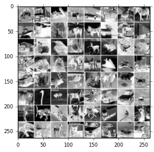
Figure: before ZCA.
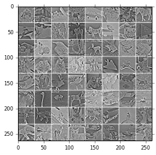
Figure: after ZCA.
Single Convolutional Neural Network
Architecture: Convolutional and Max-pooling layers
!obj:pylearn2.models.maxout.MaxoutConvC01B {
pad: 4,
num_channels: 48,
num_pieces: 2,
kernel_shape: [8, 8],
pool_shape: [4, 4],
irange: .005,
},
Figure: example of YAML code for convolutional layer definition.
- The single architecture use $3$ convolutional layer $\{h_0, h_1, h_2\}$ with the following parameters:
- pad: apply a padding of $n$ pixel:
- $4$, $3$, $3$
- num_channels: is the number of feature maps:
- $48$, $128$, $128$
- num_pieces: use $n$ linear models for each maxout unit;
- $2$, $2$, $2$
- kernel_shape:
- $8\times8$, $8\times8$, $5\times5$
- pool_shape:
- $4\times4$, $4\times4$, $2\times2$
Single Convolutional Neural Network
Architecture: Fully connected layer
!obj:pylearn2.models.maxout.Maxout {
layer_name: 'h3',
irange: .005,
num_units: 240,
num_pieces: 5,
},
Figure: example of YAML code for fully connected layer.
- The single architecture use a fully connected layer $h_3$ with the following parameters:
- num_units: use $240$ neurons with maxout activation function;
- num_pieces: use $5$ linear models for each maxout unit;
Single Convolutional Neural Network
Architecture: Softmax layer
!obj:pylearn2.models.mlp.Softmax {
layer_name: 'y',
n_classes: 10,
irange: .005
}
Figure: example of YAML code for softmax layer.
- The single architecture use a softmax layer $y$ with the following parameters:
- n_classes: use $10$ output class vector;
Single Convolutional Neural Network
Training algorithm
algorithm: !obj:pylearn2.training_algorithms.sgd.SGD {
learning_rate: .1,
learning_rule: !obj:pylearn2.training_algorithms.learning_rule.Momentum {
init_momentum: .5,
},
cost: !obj:pylearn2.costs.mlp.dropout.Dropout {
input_include_probs: { 'h0' : 0.8 },
},
termination_criterion: !obj:pylearn2.termination_criteria.MonitorBased {
channel_name: "valid_y_misclass",
prop_decrease: 0.,
N: 100
},
},
Figure: example of YAML code for softmax layer.
The learning algorithm used is Minibatch SGD with the following parameters:
- Dropout: apply dropout to the layer $h_0$ with $0.8$ probability;
- Termination criterion: stop if miss class rate doesn't decrease in $100$ iterations;
MCDNN architecture
Naive MCDNN
- Single DNN predict the image class;
- All the prediction are averaged;
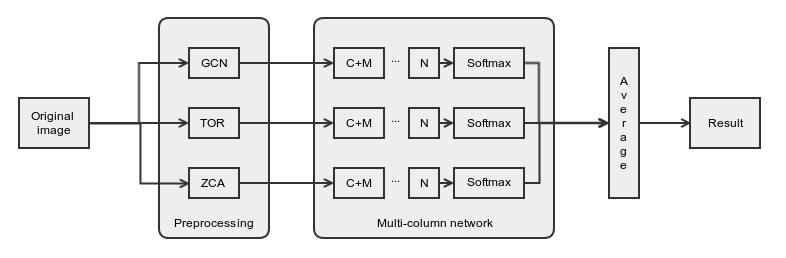
Figure: Naive Multi-Column Deep Neural Network implementation.
MCDNN architecture
MCDNN
- Single DNN extract a feature vector;
- All the feature vectore are averaged;
- Softmax layer is trained to predict the image class from the averaged feature vector.
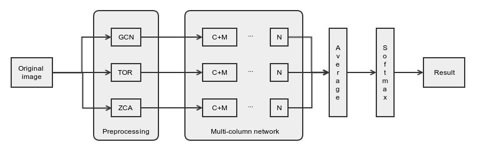
Figure: Multi-Column Deep Neural Network implementation.
Results
Single vs MCDNN naive vs MCDNN
| Method | Mean Error | Var | Epochs | Time |
|---|---|---|---|---|
| Single GCN | 0.189 | 0.153279 | 258 | ~17h |
| Single TOR | 0.2036 | 0.162147 | 260 | ~17h |
| Single ZCA | 0.1514 | 0.128478 | 81 | ~7h |
Tab 1. Single Column Deep Neural Network
| Method | Mean Error | Var |
|---|---|---|
| Multi-Naive GCN_TOR | 0.1801 | 0.147663 |
| Multi-Naive GCN_ZCA | 0.151799 | 0.128756 |
| Multi-Naive ZCA_TOR | 0.1424 | 0.122122 |
| Multi-Naive GCN_TOR_ZCA | 0.154 | 0.130283 |
Tab 2. Multi Column Deep Neural Network, naive implementation
| Method | Mean Error | Var | Epochs | Time |
|---|---|---|---|---|
| Multi GCN_TOR | 0.1701 | 0.141165 | 50 | ~1,5h |
| Multi GCN_ZCA | 0.1496 | 0.127219 | 50 | ~1,5h |
| Multi ZCA_TOR | 0.1330 | 0.115310 | 50 | ~1,5h |
| Multi GCN_TOR_ZCA | 0.14810 | 0.126166 | 50 | ~2h |
Tab 3. Multi Column Deep Neural Network
Results
Confusion Matrix
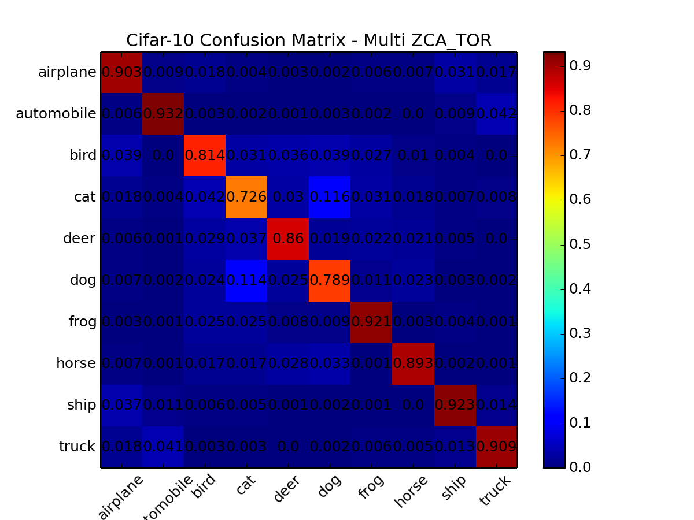
Figure: confusion Matrix of a MCDNN: ZCA, TOR.
Results
Our implementation vs Paper implementation
| Method | #column | Architecture | Activation function | Mean error |
|---|---|---|---|---|
| Our implementation | 2 | 48C8-MP4-128C8-MP4-128C5-MP2-240N-10N | Maxout | $13.30$% |
| Paper implementation | 8 | 300C3-MP2-300C2-MP2-300C3-MP2-300C2-MP2-300N-100N-10N | Hyperbolic tangent | $11.21$% |
Table: Comparison between our implementation (best result) and paper implementation.
- Preprocessing used in our implementation:
- ZCA whitening, Toronto preprocessing.
- Preprocessing used in the paper:
- 4 original dataset, image adjustment, histogram equalization, adaptive histogram equalization, contrast normalization.
References
- [1] D. Cireșan, U. Meier and J. Schmidhuber: Multi-column Deep Neural Networks for Image Classification (2012);
- [2] D. H. Hubel and T. N. Wiesel: Receptive fields, binocular interaction and functional architecture in the cat's visual cortex (1962);
- [3] K. Fukushima: Neocognitron: A Self-organizing Neural Network Model for a Mechanism of Pattern Recognition Unaffected by Shift in Position (1980);
- [4] G. E. Hinton, N. Srivastava, A. Krizhevsky, I. Sutskever and R. R. Salakhutdinov: Improving neural networks by preventing co-adaptation of feature detectors (2012);
- [5] X. Glorot, A. Bordes and Y. Bengio: Deep sparse rectifier neural networks (2011);
- [6] I. J. Goodfellow, D. Warde-Farley, M. Mirza, A. Courville and Y. Bengio: Maxout Networks (2013);
- [7] A. Ng et al: Optimization: Stochastic Gradient Descent - Momentum - Tutorial Stanford University.
Università degli Studi di Firenze
Laurea Magistrale in Ingegneria Informatica
Corso di Apprendimento Automatico